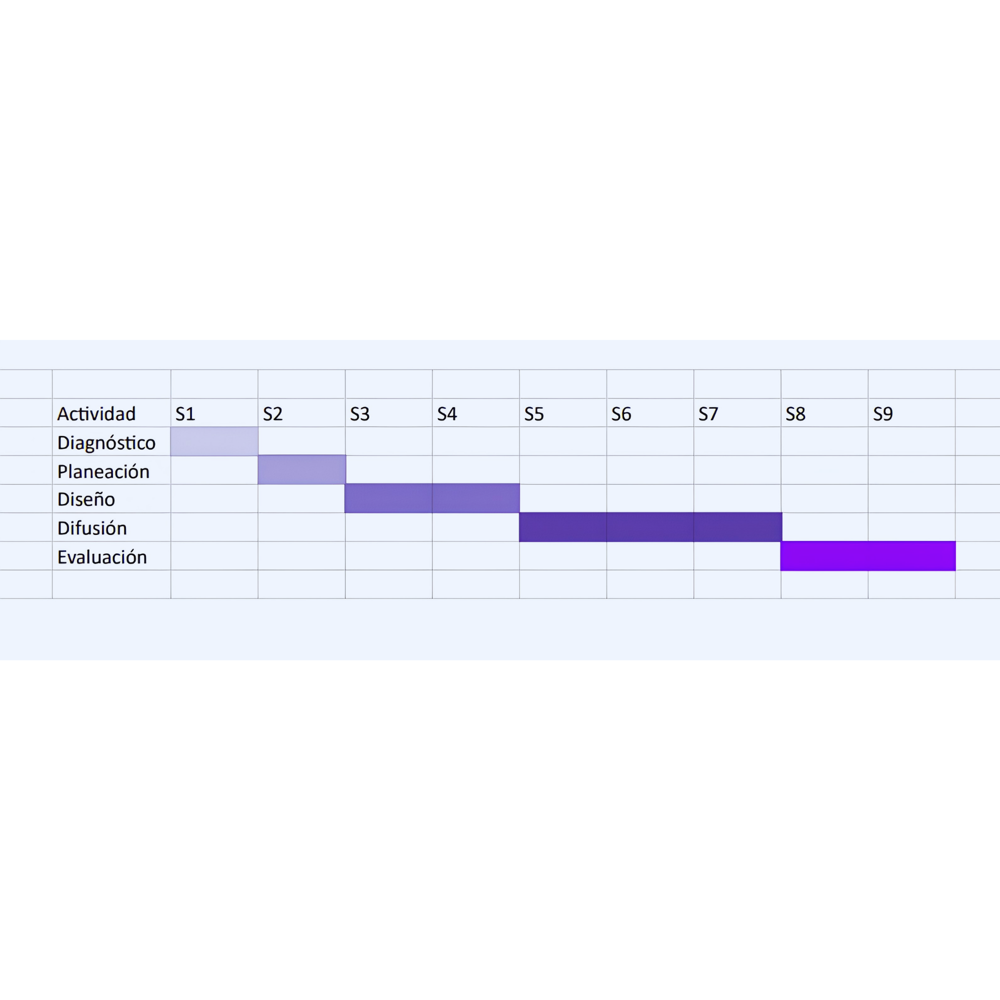

El cronograma organiza cada una de las actividades de Misión ImPawsible, estableciendo los tiempos de ejecución, los responsables y los recursos necesarios para desarrollar el proyecto de forma ordenada, eficiente y con un seguimiento continuo de los avances.
El proyecto se desarrolla mediante cinco etapas principales que permiten planificar, organizar, ejecutar, supervisar y evaluar cada actividad. Esta organización facilita el cumplimiento de los objetivos y asegura que cada acción contribuya al bienestar animal y al desarrollo exitoso del proyecto.
A continuación se presenta el Diagrama de Gantt del proyecto, en el que se muestran las fases, actividades, responsables, recursos y tiempos de ejecución que permitirán dar seguimiento al desarrollo de Misión ImPawsible.

Definición de objetivos, actividades, recursos y tiempos necesarios para desarrollar el proyecto.
Distribución de funciones, responsables y recursos para garantizar el trabajo colaborativo.
Desarrollo de campañas de concientización, jornadas de adopción y actividades comunitarias.
Supervisión constante del avance de las actividades para identificar oportunidades de mejora.
Revisión de los resultados obtenidos y análisis del impacto generado por el proyecto.
Contar con un cronograma permite organizar las actividades del proyecto, establecer tiempos realistas y dar seguimiento al cumplimiento de cada etapa. Además, facilita la coordinación entre los participantes, optimiza el uso de los recursos disponibles y ayuda a identificar posibles retrasos para implementar acciones correctivas de manera oportuna.